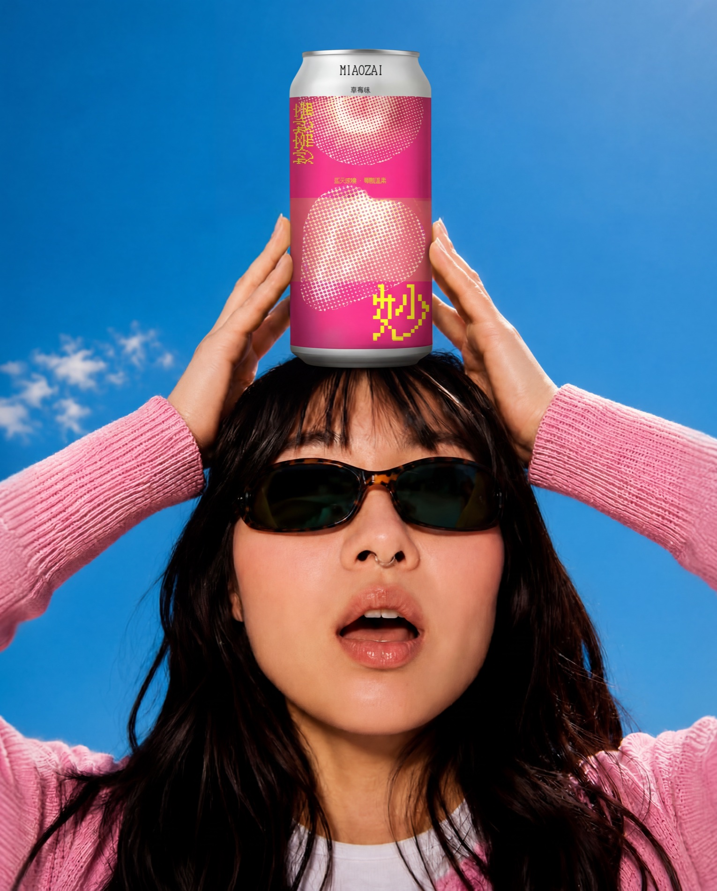
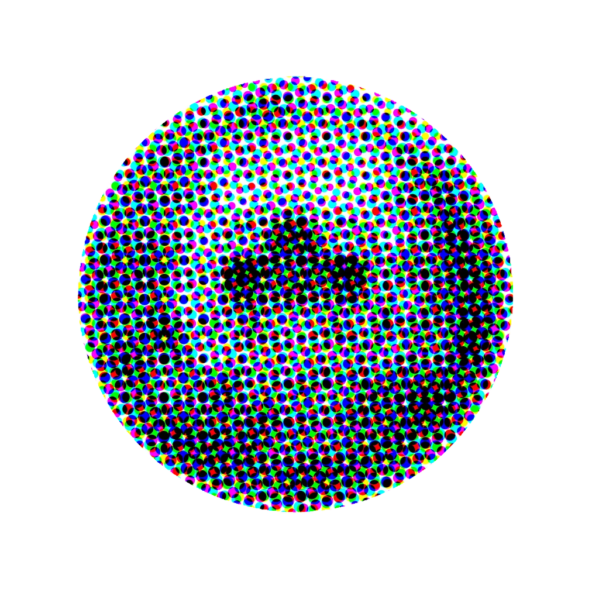
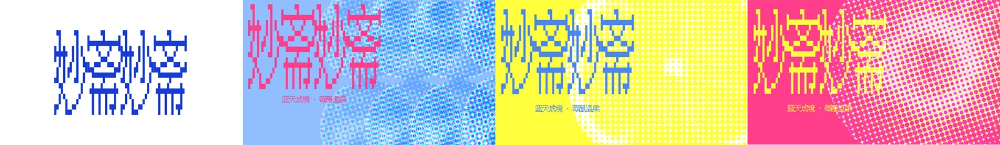
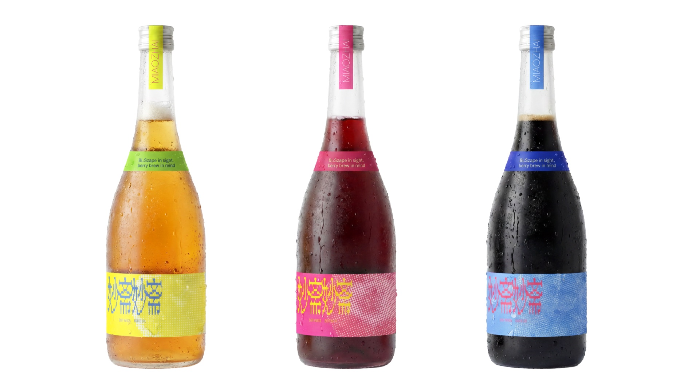
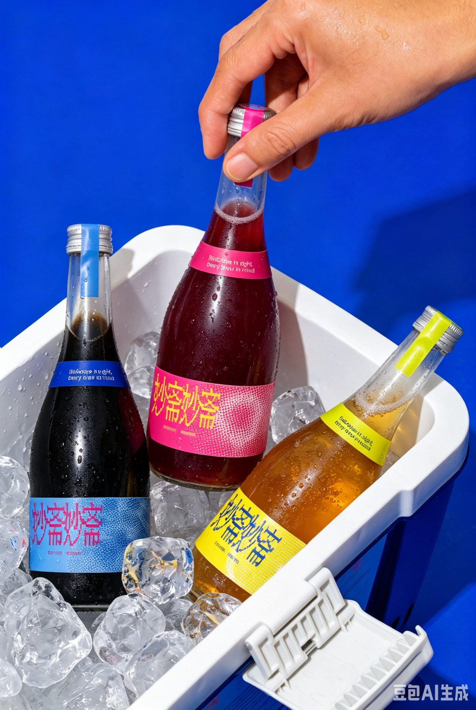

以果味建立第一印象
如何让“轻盈、松弛、有趣”形成直观的第一印象？
碰一碰罐身，打开今天的好心情。
移动鼠标拨动 · 点击开罐
「微醺美学」不是一个酒精刻度，
而是妙斋想传递的轻盈生活态度。
以年轻成年人的轻饮与相聚场景为出发点，妙斋将水果的清新、气泡的轻快与三只不太乖的兔子放在一起，让包装先替品牌打个招呼。
如何让“轻盈、松弛、有趣”形成直观的第一印象？
以三色区分风味，用网点水果与妙兔连接味觉和个性。
让同一套符号贯穿罐身、瓶标、手提盒与场景视觉。
THE VISUAL RECIPE
把水果拆成错位的彩色网点。保留果实轮廓，也让印刷颗粒成为妙斋的视觉记忆。

蓝、粉与明亮的黄错位叠印，让平面的果实有了跳动的节奏。
方折笔画与重复排布，让“妙斋妙斋”像一句带节奏的招呼。与圆形网点形成方与圆的对照。
蓝莓蓝、草莓粉、柠檬黄贯穿产品与角色；大面积纯色给繁密网点留出呼吸。
相同的长耳、眼镜与扇形元素，生出三种性格。点击妙兔，选一种今天的状态。
不必每一刻都热闹。留一点空白，也很妙。
蓝妙兔 / 通透
罐身用色彩和水果快速识别口味；瓶标延续同一套语言；兔耳成为手提盒的造型与提手，让角色从平面走进结构。
轻便易拉罐与透明玻璃瓶回应不同的使用场景。变的是容器，不变的是妙斋的果味与性格。
移动鼠标，让瓶身轻轻转动
A LITTLE MIAO MOMENT
从一个人的片刻休闲，到和朋友的轻松相聚。让产品走进生活，才是这套品牌设计的最后一笔。

名字让人会心，图形让人记住，包装让快乐随行。
妙哉，再来一次 ↗